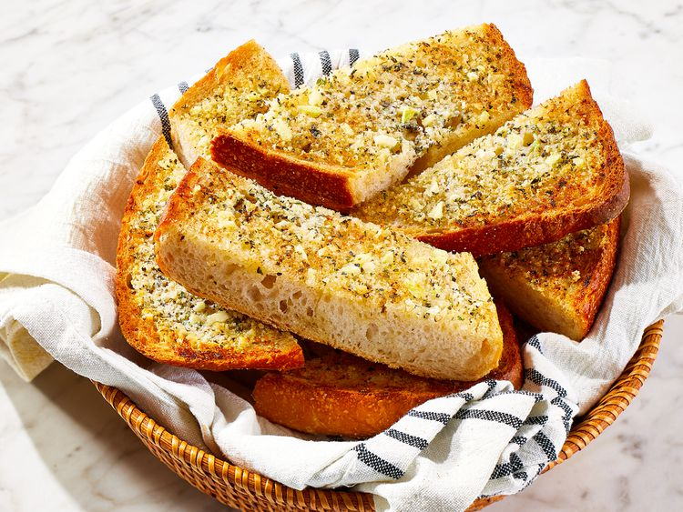

Garlic Bread Spread

This garlic bread spread recipe makes tasty homemade garlic bread that goes great with most Italian dishes. I usually make it with chicken Parmesan. Delicious!
Ingredients
- 1/2 cup butter, softened
- 1/4 cup grated Parmesan cheese
- 2 cloves garlic, minced
- 1/4 teaspoon dried marjoram
- 1/4 teaspoon dried basil
- 1/4 teaspoon fines herbs
- 1/4 teaspoon dried oregano
- 1/4 teaspoon dried parsley, or to taste
- Ground black pepper to taste
- 1 loaf unsliced Italian bread